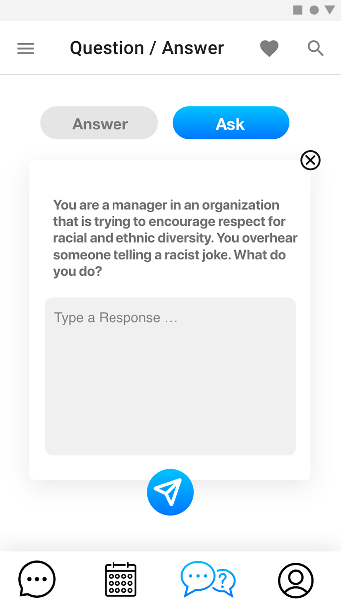
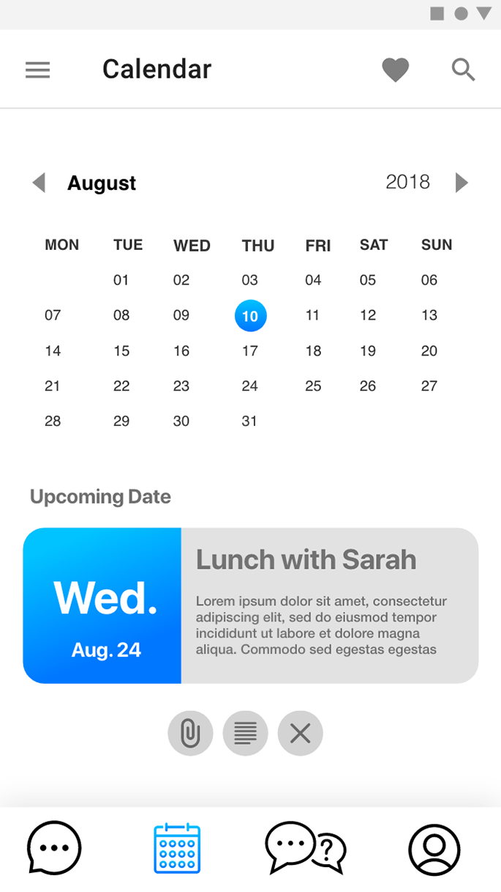

Mentor Match
About Project
Traditionally, progress does not occur in a vacuum. In order for any necessary change to materialize, it is contingent on the communal efforts of those emotionally invested in a cause. The same notion is applicable to human development. As we navigate through our experience, we are constantly met with stimuli that contribute to the manner in which we perceive ourselves and our surroundings. Our self-perception dictates our trajectory and the trajectory of others we meet along our path. In conjunction with being a time for students to explore the intricacies of their academic interest, college is also a period where young adults are offered an opportunity to discover themselves in ways unachievable within the confines of their home. Considering that many people encounter difficulties when charting unfamiliar territories, it is imperative to cultivate a relationship with those who have endured similar experiences as means to mitigate further complications and to use as guard rail towards the path of self-discovery. MentorMatch facilitates this process through providing students with a list of potential mentors, based on the questionnaire results, and with the autonomy of choosing after an initial electronic meeting. More information regarding the process can be found in the matching section.
Methods
- Questions
- Process
- Matching
- Sustaining Connection
- Prototypes
Questions
Questions to consider when developing a mentoring match system:
- What are important factors in a mentor mentee relationship?
- What is an effective means of gathering information about each student that also protects their privacy?
- How are current Mentor / Mentee relationships structured and how to supplement it?
- What are the common struggles with finding a mentor and developing a relationship with them?
Matching - Criteria
The following are criteria to consider when matching pairs of students
Location
There are cultural practices unique to every location. By connecting incoming freshmen with experienced students from their hometown, it will allow them to garner a semblance of familiarity while integrating them within their new environment.
Major
Upperclassmen can advise younger students of the pitfalls that are common within their respective major considering that they have experienced what will ensue for the mentees.
Year in School
Prospective mentees may have a preference over seniors comparative to Juniors or Sophomores, for there is theoretically an increased level of understanding in regards to course material and how to navigate the everyday pressures of University life.
Gender and Ethnicity
Gender and Ethnicity affects how the world perceives us. For those who belong to historically marginalized groups, it is important for them to connect with people who can identify with similar struggles and offer solutions in an effort to connect with the broader world around them.
Myers - Briggs Type Indicator (MBTI)
An introspective report that details personality types. Through examination of one’s MBTI, personality compatibility can be inferred.


Matching - Steps
It is important to have a sense of autonomy when deciding on a partner in any context. Users should be able to vet prospective pairings before confirming.
- Both parties fill out questionnaire to build out profile
- Once completed, a list of potential matches will sent to both mentors and mentees based on responses
- Users can view each respective person’s profile before proceeding
- From there, either party can request to video chat
- After the meeting, a prompt will be presented asking if they would like to confirm
- if not - return to list of potential matches
- if so - presented with Portal and wait until they confirm (See Sustaining Connection)
Application Features

Question / Answer
Q/A allows for a structured means of obtaining insight from a mentor. Questions posted by mentees will be presented in a card format, so that the corresponding answer will be paired for readability and record keeping. Oftentimes
- Enables multiple questions to be asked and answered in a corresponding manner
- If mentor does not know the answer to a particular question, they can request to share questions anonymously to a colleague
- Students can tag questions to categorize them by topics

Calendar
- Traverse through the month and year through the macro viewer
- View Upcoming Events via embedded widget
- Quick access to cancelation feature
- Append additional notes to dates for further context
- Share event with mentor, mentee, or institution administrator

Messages
- Institutions can send supplementary documentation directly to both parties to facilitate mentorship and community
- Mentors and Mentees can send documents and messages between each other alongside various reactions
- Users will be able to tag documents for better categorization when sorting
Question / Answer
Q/A allows for a structured means of obtaining insight from a mentor. Questions posted by mentees will be presented in a card format, so that the corresponding answer will be paired for readability and record keeping. Oftentimes
- Enables multiple questions to be asked and answered in a corresponding manner
- If mentor does not know the answer to a particular question, they can request to share questions anonymously to a colleague
- Students can tag questions to categorize them by topics
Calendar
- Traverse through the month and year through the macro viewer
- View Upcoming Events via embedded widget
- Quick access to cancelation feature
- Append additional notes to dates for further context
- Share event with mentor, mentee, or institution administrator
Messages
- Institutions can send supplementary documentation directly to both parties to facilitate mentorship and community
- Mentors and Mentees can send documents and messages between each other alongside various reactions
- Users will be able to tag documents for better categorization when sorting